Oost-Aziatische Recepten
Dranken
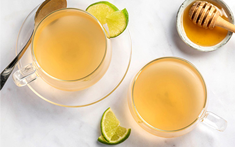
Gember Thee
Ginseng Thee

Groene Thee
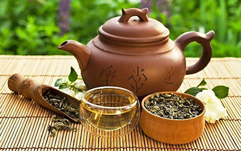
Oolong Thee

Tamar Hindi

Zwarte Thee
Soepen

Dal
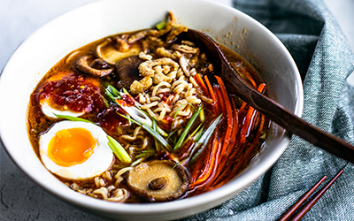
Miso ramen
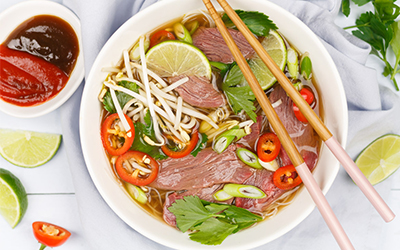
Pho
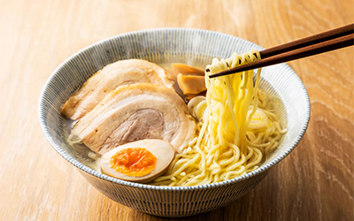
Shio ramen

Tom yam
Gerechten

Beshbarmak
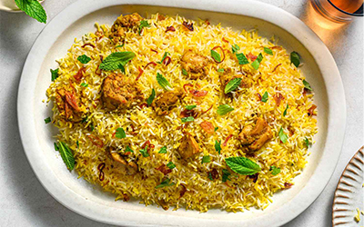
Biryani

Bulgogi
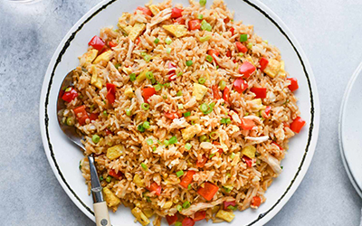
Chao fan
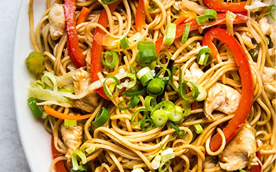
Chow mein

Datshi
Gaeng keow wan

Kimchi
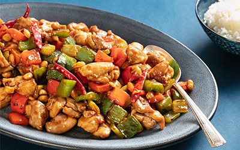
Kung pao

Laab
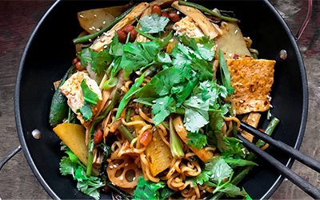
Mala xiang quo
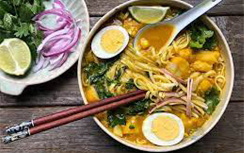
Mohinga
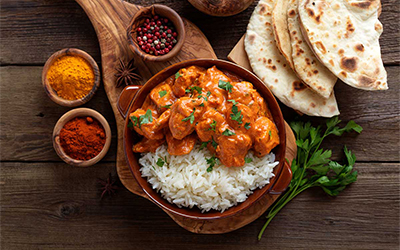
Murgh Makhani
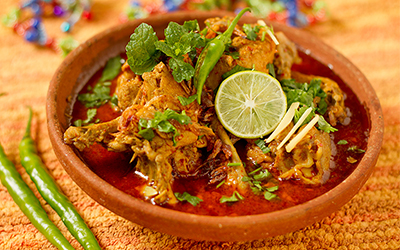
Nihari
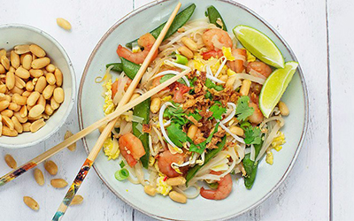
Pad Thai
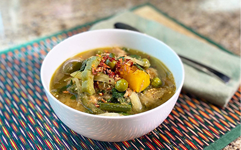
Samlar Kako
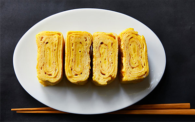
Tamagoyaki

Yakisoba
Bijgerechten
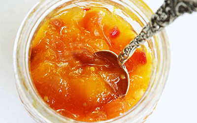
Chutney

Wakame
Gerechten